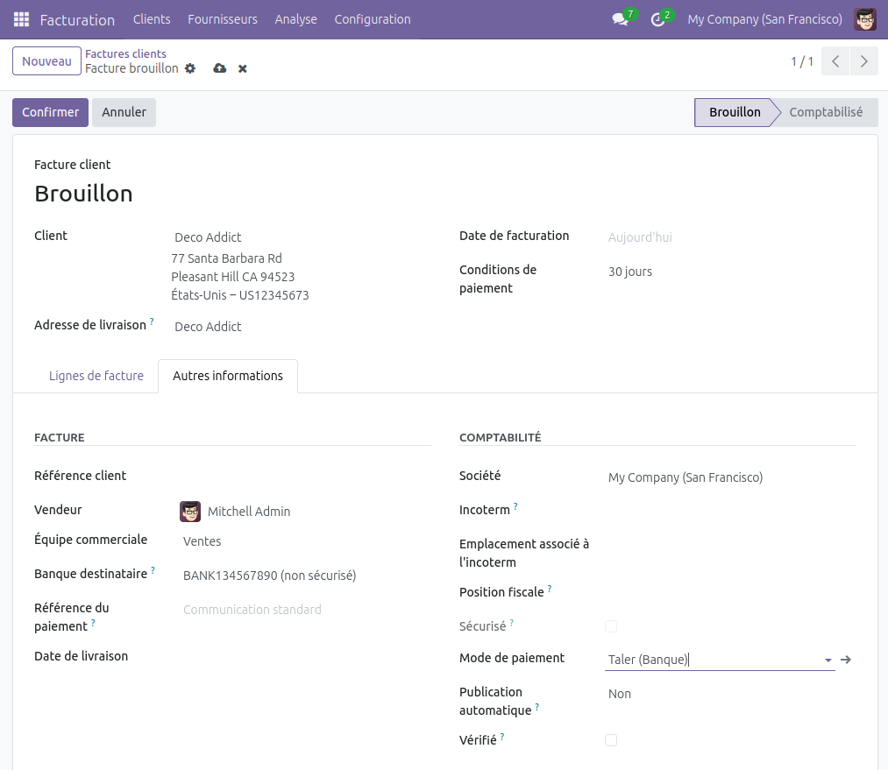
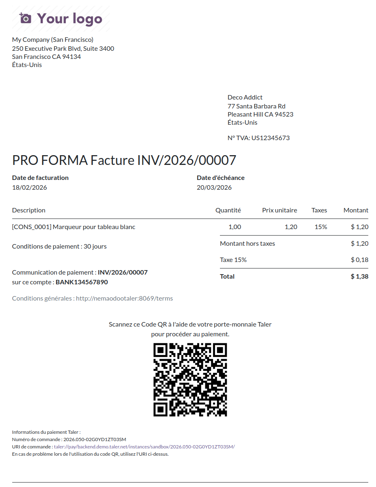
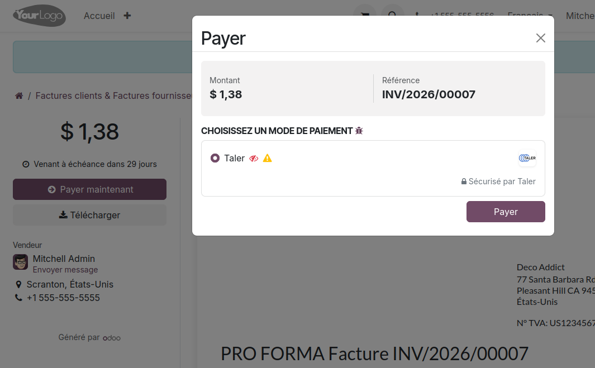
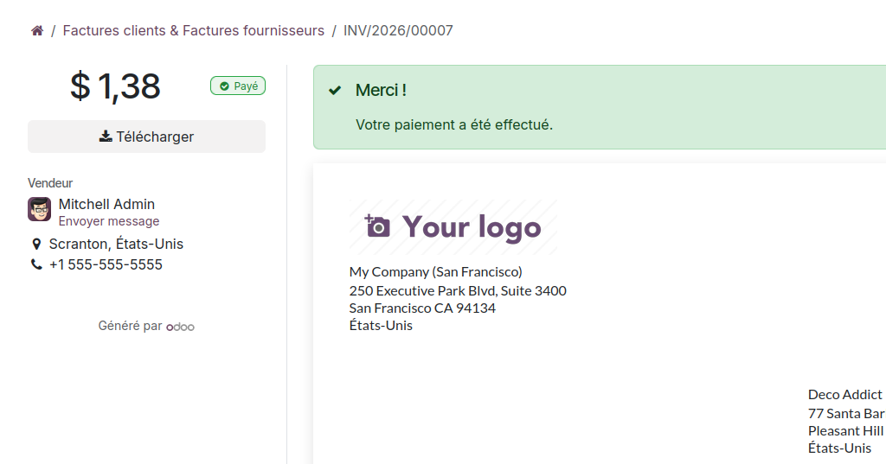

Facturation¶
Créer une facture qui accepte les paiement effectués avec Taler¶
Générer une facture incluant un code QR Taler pour la régler
Allez dans l’app Facturation et générez une nouvelle facture.
Remplissez les champs nécessaires pour cette facture.
Étape importante : dans l’onglet
Autres informations, réglez le mode de paiement surTaler(voir ci-dessous). C’est indispensable pour générer le code QR.
{kind=link}

Ensuite, cliquez sur
Confirmeren haut de la page, cela vous redirigera vers la page de facturation.Vous pouvez à présent cliquer sur
Aperçupour parcourir la facture telle qu’elle sera envoyée.Le PDF de la facture incluera un code QR de paiement Taler ainsi que des renseignements Taler supplémentaires.
{kind=link}

Si un paiement client est effectué à l’aide du code QR dans la facture PDF, vous devrez effectuer une réconcilliation de paiment manuelle.
Pour ce faire, une fois que vous avez reçu le paiement, rendez-vous sur la page de l’app Facturation,
cliquez sur
Payer,confirmez les données affichées dans la boite de dialogue qui s’est ouverte. Nous vous recommandons d’ajouter le numéro de commande Taler indiqué sur la facture dans le champ
Mémopour faciliter le suivi et la comptabilité.Appuyez sur
Créer paiement.
Payer une facture à l’aide de Taler¶
Note
Ce processus n’est pas lié à la création de factures à l’aide de Taler dans l’étape précédente.
Toute facture peut être payée à l’aide de Taler.
Allez dans l’app Facturation et générez une nouvelle facture.
Après la création de la facture, vous pouvez cliquer sur
Aperçupour voir la page qui sera envoyée à la cliente ou au client.,Un bouton
Payer maintenantleur y permettra de la régler et leur donnera l’option d’effectuer le paiment à l’aide de Taler.
{kind=link}

Après avoir cliqué sur
Payer, la personne effectuant le paiment sera redirigée vers la page de commande Taler, où elle pourra utiliser son porte-monnaie Taler depuis son téléphone ou son navigateur (comme pour un paiement eCommerce).Une fois la transaction effectuée, la personne sera renvoyée sur la page de facturation où s’affichera une confirmation de paiement.
{kind=link}
